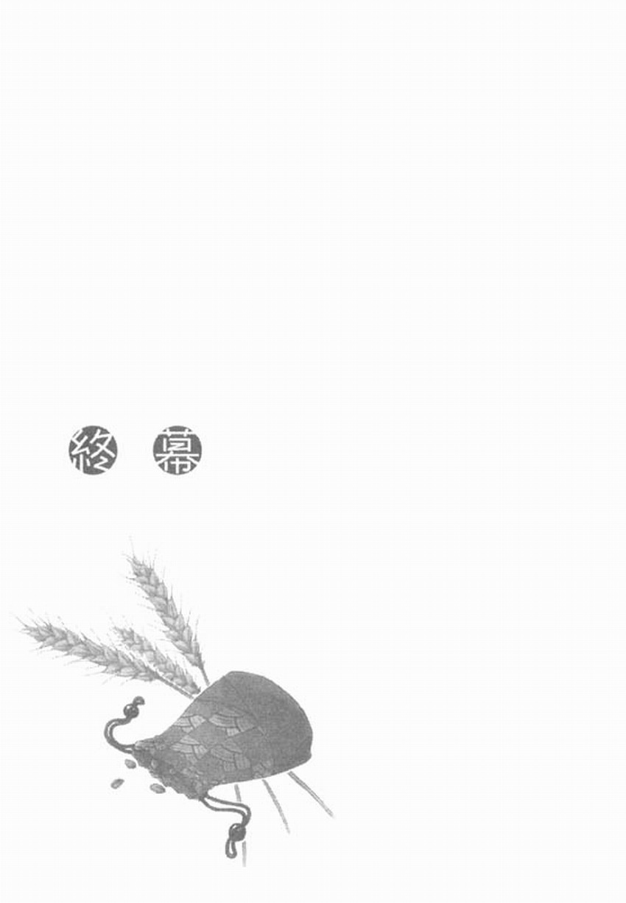

羅倫斯站在伸手不見五指的黑暗之中。他不知道自己身處何方，也不知道在自己做什麼。
明明朝上、下、左、右方看去都是一片黑暗，可是他卻看得清楚自己的身體。
到底是怎麼回事？
羅倫斯這麼想，突然有東西閃過他的眼角。
羅倫斯反射性地轉向東西閃過的方向，卻沒看到任何東西。雖然他心想可能是自己多心，但試著瞇起眼睛或揉了揉眼睛後，眼角又再有東西閃過。
火焰？
羅倫斯霎時這麼以為，朝東西閃過的方向看去，便確實看清是什麼東西閃過他的視線。
那是左右搖擺著的褐色東西。
羅倫斯瞇起眼睛凝視著那樣東西，最後發現那不是火焰。
那是毛髮，是長長的褐色毛髮堆在搖擺。
濃密的毛髮前端帶有白毛。
這時羅倫斯睜大眼睛，倒抽了一口氣後，以全速向前快跑。
那堆毛髮，那前端帶有白毛的東西。
那是赫蘿！那是赫蘿的尾巴沒錯！
羅倫斯一邊拚命追著不停左右搖擺，並逐漸遠離視線的那樣東西，一邊大喊。
然而，他喊不出聲音，也縮短不了與赫蘿尾巴之間的距離。
越來越沉重的腳步讓羅倫斯感到焦躁，他咬緊牙根，明知道沒用還是往前伸出右手。
接著，赫蘿的尾巴突然從視線消失。
下一刻，羅倫斯注視的前方化成不熟悉的房間天花板。
「嗚！」
羅倫斯猛地想坐起身子時，劇烈的疼痛襲上左手臂，使得他不禁呻吟。雖然羅倫斯一瞬間搞不清楚這是怎麼回事，但劇烈的疼痛勾起他所有的記憶。
被梅迪歐商行追殺的記憶、左手臂被刺傷的記憶、被那些人追得無路可逃的記憶。
還有——赫蘿離去的記憶。
羅倫斯想起最後看到赫蘿的尾巴哀傷地甩來甩去、逐漸遠去的景象，不禁深深歎了口氣。
難道就不能再說一些更適合的話了嗎？羅倫斯用連坐起身子都很困難的腦袋思考著。
比起這份悔恨，自己身處何方的疑惑簡直如塵垢般毫不重要。
「您醒過來了啊？」
羅倫斯朝突然傳來聲音的方向看去，馬賀特的身影出現在打開著的房門另一頭。
「您的傷口好一些了嗎？」
馬賀特手上拿著文件走近羅倫斯，並打開羅倫斯枕邊的木窗。
「是的……托您的福，好多了。」
清爽的涼風穿過木窗吹了進來，同時也把喧嚷聲帶進來，羅倫斯因此得知這裡是米隆商行的某個房間。
這麼說來，羅倫斯在那之後，是被前來救援的米隆商行的人平安救出了。
「因為我們的疏匆，讓您遭遇到危險，真是深感抱歉。」
「不，事情的原因本來就起於我的夥伴。」
聽到羅倫斯說的話，馬賀特露出很難表達些什麼的表情點點頭，接著像在思考適當的話語似地沉默了一會兒後，緩緩開口說：
「我們很幸運地沒被教會發現，幸好是在地下道裡發生騷動。萬一教會的人看到您夥伴的模樣的話……不僅是分行，說不定連總行都得接受火刑懲罰。」
羅倫斯聽了驚訝地反問說：
「您有看到赫蘿的模樣嗎？」
「是的。急忙趕到地下道救援的手下向我報告。說他們雖然已找到您，但巨大的狼說如果不把我帶到地下道去，就不肯交出羅倫斯先生。」
馬賀特沒有理由說謊。那麼，這就表示羅倫斯失去意識後，赫蘿有回到羅倫斯的身邊。
「那、那赫蘿現在人呢？」
「她去市場了。您的夥伴非常急性子，她說要到市場為旅行整裝。」
馬賀特不知道實情，所以能說得如此輕鬆；但對羅倫斯來說，這代表赫蘿準備獨自出發。
想必她現在已經在回北方的路上了吧。
羅倫斯一想，就覺得胸口好像破了一個大洞，但相反地也覺得這樣能夠徹底死心。
原本能夠認識赫蘿，就是比偶然還要奇妙的事，與她相處的時間也不過短短幾天而已。
只要當成做了幾天的夢，或許就不會那麼難受。
羅倫斯這麼告訴自己，然後勉強轉換心情，讓自己回到商人的情緒。
馬賀特說的話除了提到赫蘿之外，還隱含了一件重要的事情。
「您說赫蘿去了市場，這是不是表示與梅迪歐商行的交易進行得很順利呢？」
「是的。前往崔尼城的手下今天早上平安歸來，並且完成與國王的交易。我們已經順利取得梅迪歐商行最想要的特權。我們以特權作為誘餌，向梅迪歐商行進行交涉，梅迪歐商行似乎也掌握了一切事態，明白他們已經輸了。一切可說是進行得十分順利。」
馬賀特驕傲地回答。
「原來如此，那真是太好了……不過這麼說來，我睡了一整天嗎？」
「嗯？是的，是這樣沒錯。啊，您要用午餐嗎？才剛過中午，廚房應該還沒有熄火。要不要為您準備一些熱食？」
「不，不用了。比起這個，能否請您先告訴我交易的細節呢？」
「好的，明白了。」
不會勉強邀請他人吃飯的習慣很像南方人的作風，這讓羅倫斯覺得有些奇妙。如果換成是這一帶的居民，想必說什麼也會堅持要羅倫斯先吃飯吧。
「我們所回收的銀幣數量總共是三十萬七千兩百十二枚。國王似乎打算大膽降低含銀量，他願意以現金支付金額相當於三十五萬枚的貨幣。」
果然是會令人頭昏目眩的金額。不過，羅倫斯並沒有被這金額給嚇到，他心裡計算著自己應得的利益。
按照合約來說，他應得的利益是米隆商行利益的百分之五。大概計算後可得到的利益是兩千枚銀幣。
只要有這些銀幣，羅倫斯的夢想——也就是擁有自己的商店——就能夠實現？
「按照與您的合約，必須支付給您的金額是我們所得的利益的百分之五。這沒有錯吧？」
聽到馬賀特的話，羅倫斯點點頭後，馬賀特也跟著點頭，
接著，馬賀特把一張紙遞給羅倫斯。
「請您確認。」
馬賀特的話沒有傳進羅倫斯的耳中。
那是因為他交給羅倫斯的紙上寫著令人難以置信的數字。
「這……是？」
「一百二十枚銀幣，這金額是我們利益的百分之五。」
馬賀特的話相當犀利。
然而，羅倫斯卻不能對這件事生氣。因為羅倫斯手上的文件清楚寫著他所得的利益為何會變得這麼少的原因。
「我們搬運貨幣的費用、還有國王支付銀幣的運費、運送銀幣所伴隨的關稅，再加上針對合約本身的合約手續費……這應該是國王的御用商人提出來的主意吧。他們盤算著雖然不得已必須交出特權，但至少要賺回交易銀幣時產生的損失。」
只要看了交易的明細，就能夠看出國王巧妙地利用了他的立場，企圖從米隆商行身上把錢拿回來的計謀。
國王不僅要米隆商行負擔搬運米隆商行回收的銀幣的費用，甚至主張不以匯兌方式，而是直接用銀幣支付購買銀幣的費用。搬運幾十萬枚銀幣必須花上莫大費用，包括馬匹、搬運工、收納銀幣的木箱以及保鏢等人員。
不僅如此，國王還以簽訂合約之際所需的合約製作費為名目，敲詐了一筆相當驚人的金額。
儘管簽訂合約的對象，是在南方國家擁有爵位的大商人所經營的商行分行，但這份合約終究是擁有爵位的商人，與國王兩種不同身份的人所簽訂的合約。兩者的勢力高低是無須爭辯。對於這筆手續費，米隆商行只能默默接受。
根據我們的計算結果，我們所得的利益是兩千四百枚銀幣。而您的利益是這金額的百分之五。所以必須支付給您的銀幣就是以上數量。」
拚命動腦筋思考，甚至手臂還被刺傷，得到的卻是一百二十枚銀幣？
再說，如果沒有參與這筆交易，就不會與赫蘿分離了。羅倫斯這麼一想後。腦海裡只浮現虧損兩個字。一百二十枚銀幣太不划算了。
然而，訂了合約就得遵守，羅倫斯也只能接受這個金額。對商人來說，有賺錢的時候，也有虧損慘重的時候，這是理所當然的事。雖然金額少了許多，但沒有丟掉性命。在那樣的狀況之後，還能夠拿到一百二十枚銀幣，或許已算僥倖了吧。
羅倫斯看著文件，緩緩地點點頭，
「這些是我們也沒預料到的事。對於這樣的結果。我深感遺憾。」
「做生意總是會有預料之外的事情發生。」
「能夠聽到您這麼說，我就安心許多？不過——」
聽到馬賀特這麼說，羅倫斯不禁把視線轉向他。
因為馬賀特的語調不知為何顯得很開朗。
「預料之外的事情也會往好的方向發生，請看這個。」
羅倫斯收下馬賀特遞給他的第二張文件，看了文件上所寫的簡短文字。
看完陵，羅倫斯驚訝地把視線轉回馬賀特身上。
「看來梅迪歐商行非常想要得到特權。再加上他們明知道會貶值，卻也回收了不少銀幣，這跟扛上負債沒兩樣。他們應該是無論如何，也想利用這個確實有利可圖的特權做生意吧。他們一下子就提出買價了。」
羅倫斯手上的文件，寫著以分享特別利益的名目，贈給羅倫斯一千枚銀幣。
「一千枚……這麼多好嗎？」
「當然，這還算便宜。」
馬賀特露出笑容說。羅倫斯心想米隆商行想必賺了不少利益，不過他當然沒有不識趣地詢問金額。能夠以合約外的利益分到這麼多錢，這根本就像走在路上撿到金塊一樣幸運。
「另外，在您痊癒以前所需的滯留費用，以及您的馬車管理都由我們來負責。」
「我的馬平安無事嗎？」
「是的，我想梅迪歐商行的人應該也覺得拿馬作人質沒用吧。」
因為馬賀特邊笑邊說，所以羅倫斯也隨之露出笑容。
羅倫斯心想：這真是超出標準的待遇。
「有關實際的付款細節，是否我們日後再討論呢？」
「好的。不過，真的非常感謝。」
「不，對我們來說，若今後能夠與羅倫斯先生這樣的商人建立良好關係，這點兒代價還算便宜我們呢。」
馬賀特看著羅倫斯的眼神，告訴羅倫斯他對損益計算不會有所閃失，並且還露出洽談生意時會有的笑容，想必他是故意的吧。
然而，羅倫斯從掌管大型連鎖商行——米隆商行分行的人物手中收到一千枚銀幣，而且這位人物還表示希望與他繼續配合，這就表示對方認定羅倫斯為擁有此等價值的商人。
對一介商人羅倫斯來說，這是值得高興的事。
羅倫斯點頭示禮，從床上向馬賀特表達謝意。
「啊，我還是先請教一下，請問支付銀幣給您就可以了嗎？如果您覺得換成商品比較好的話，我們可以為您準備。」
拿著超過一千枚的銀幣，只會增加行李體積，沒什麼好處。聽到馬賀特善意的提議，羅倫斯稍稍思考一下，他考慮馬賀特給他的銀幣數量以及自己的馬車大小，最後想到一種不錯的商品。
「請問有胡椒嗎？胡椒很輕、而且不佔空間。今後為了準備過冬，只要肉類料理增多，價格也會跟著上漲。」
「您是說胡椒嗎？」
「怎麼了嗎？」
看到馬賀特輕輕笑了一下，於是羅倫斯反問他。
「啊，不好意思。我最近才讀完從南方寄上來的戲曲，所以不由地想起裡面的情節。」
「戲曲？」
「是的。惡魔出現在一名有錢的商人面前說道：把這裡最好吃的人類帶來，否則我就吃了你！那名商人不願意犧牲自己的性命，於是把年輕貌美的女傭和男僕中最肥胖的男子獻給了惡魔。但是，惡魔卻搖搖頭。」
「喔？」
「後來商人找遍家中，甚至在城裡花大錢，四處尋找看似美味的人類，最後找到身體散發出蜂蜜及鮮乳香味，還是見習修道士的瘦弱男孩。商人花錢連同修道院買下男孩，並立即獻給惡魔。這時男孩對惡魔說：逆神者惡魔啊，世上最好吃的人類不是我。」
羅倫斯聽得入神，他沉默地點點頭。
「世上最好吃的人類就在你面前。那人就是日復一日扛著串香料賺取財利，辛香料為他肥大的靈魂做了完美調味的男子啊。」
馬賀特敘述故事的表情顯得十分愉快，甚至還加上動作，他最後裝出商人恐懼不安的表情，然後突然恢復，露出靦腆的笑容。
「這是教會以商行為對象，勸說做生意必須有所節制的宗教戲劇，我就是想起這裡面的情節。我想到辛香料對接下來想賺大錢的商人來說，的確是再適合不過了。」
只要彼此都是商人，就能夠明白這是誇獎的話語。
羅倫斯一方面覺得這故事有趣，再加上聽到誇獎的話語，他露出燦爛的笑容說：
「希望我的身體也能早日有辛香料的完美調味，」
「我會拭目以待。今後也請多關照本商行啊，羅倫斯先生。」
馬賀特精明地說完後，兩人再次互笑一下。
「那麼，我會為您準備好胡椒的。我還有工作要忙。先失陪了。」
馬賀特說道，並打算轉身離開。
這時，有人輕敲房門。
「是您的夥伴嗎？」
雖然馬賀特這麼說，但羅倫斯確定那是不可能的事。
馬賀特離開床邊去開門，羅倫斯抬頭望向枕邊的窗外。
他看到窗外一片亮麗的青空。
「行長，有一張這樣的請款單。」
房門打開的同時，羅倫斯聽到有人如此輕聲說，並傳來遞出紙張的聲音。
羅倫斯心想一定是必須緊急處理的請款單吧。他注視著飄浮在天空的白雲。一邊希望自己也能早日擁有商店。
隔了沒多久後，馬賀特說的話引起羅倫斯注意。
「收件者確實是我們商行沒錯……」
羅倫斯把視線移向馬賀特後，馬賀特也朝羅倫斯這邊看過來。
「羅倫斯先生，這裡有給您的請款單，」
羅倫斯的交易對像名字與債務關係，一下子全在他的腦海裡湧現。
羅倫斯試著舉出當中最接近付款日的交易。然而，基本上在城鎮與城鎮之間移動所需的天數相當不定，就算付款日是昨天，應該也不會有人要求行商的羅倫斯必須嚴格遵守期限。
更何況，交易對像怎麼會知道羅倫斯在這裡呢？
「可以讓我看一下嗎？」
聽到羅倫斯說的話，馬賀特從手下手中拿走文件，並來到羅倫斯身邊交給他。
羅倫斯收下文件後，他跳過寫著合約規定的部份。直接朝寫有明細的欄位看去。
因為只要知道商品是什麼，就能夠馬上知道是誰提出的請款單。
然而，羅倫斯對文件上所寫的商品名稱並沒有印象。
「嗯……」
羅倫斯正想側頭思索的那一刻，突然在床上彈起來。
馬賀特驚訝地想開口說話。但羅倫斯等不及他開口，就已跳下床。羅倫斯無視左手臂的疼痛，朝門的方向直奔而去。
「請、請問。」
「讓開！」
羅倫斯大聲吆喝，商行的人急忙讓開路。羅倫斯無視於他們的異樣眼光，踏出走廊，正準備邁開步伐時，突然站住說：
「請問卸貨場在哪邊？」
「啊，呃，這個走廊走到底左轉。然後一直往前走就是了。」
「謝謝。」
羅倫斯簡短道了聲謝，隨即快步跑出去。
他握緊手中超出價位的高額請款單，使盡全力奔跑著。
寫在被羅倫斯緊握手中，變得皺巴巴的請款單上的商品名稱。足以讓他如此激動。
請款單的日期是今天，請款者是店面設在帕茲歐市場的毛織物商與水果商。
請款單的明細是豪華女用長袍兩件及綢緞腰帶，加上旅行鞋及玳瑁梳，和大量蘋果。
在請款金額超過一百四十枚銀幣的商品中，特別是蘋果的數量多到無法拿在手上帶走。
明明買了這麼多，請款單上卻沒有列出馬車的項目。
從這點可以推測到的結論——
羅倫斯終於到了卸貨場。
生氣蓬勃的卸貨場有無數商品堆成好幾座山。從遠方運來的貨物，與即將發送出去的貨物交錯其中，馬匹及人們的叫聲此起彼落，那混亂的景象說明米隆商行今天同樣是生意興隆。
羅倫斯環視四周，尋找絕對會在這裡出現的那個。
寬敞的卸貨場有太多馬匹及馬車。羅倫斯四處跑動，還不時因為踩到散落一地的乾草或稻草碎屑而滑倒。最後他終於在卸貨場角落看到熟悉的馬兒，並快步跑過去，
雖然卸貨場的人無不露出不可思議的表情，注視著羅倫斯的舉動，但羅倫斯本人卻完全無視於這一切，只專心注視著一個方向，
他看著坐在貨台堆滿整車蘋果的馬車駕座上，手上拿著漂亮皮草，並用玳瑁梳梳理皮草的嬌小身影。
那人穿著一眼就能看出是高級品的長袍，頭上的兜帽幾乎蓋住眼睛。不久後，那人停手不再梳理皮草，歎了口氣。
坐在駕座上的人沒有把視線移向羅倫斯，直接開口說：
「咱可不想被人討債討到北方來。」
聽到那人不悅的口吻，羅倫斯很難不笑出來。
羅倫斯走近駕座，對堅持不肯看羅倫斯的赫蘿伸出右手。
雖然赫蘿輕瞥了一眼後，又把視線拉回手邊的尾巴，但最後她還是緩緩伸出手來。
羅倫斯握緊赫蘿的手後，她終於像認輸似的，笑笑說：
「咱會先還清欠債再回北方。」
「這還用說嗎！」
赫蘿緊緊地、緊緊地握住羅倫斯的手。
這對奇妙搭檔的旅行似乎還得持續一陣子。
這是狼與辛香料的兩人之旅。
（尾聲 完）